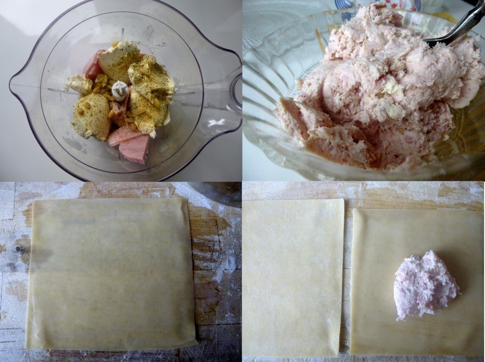
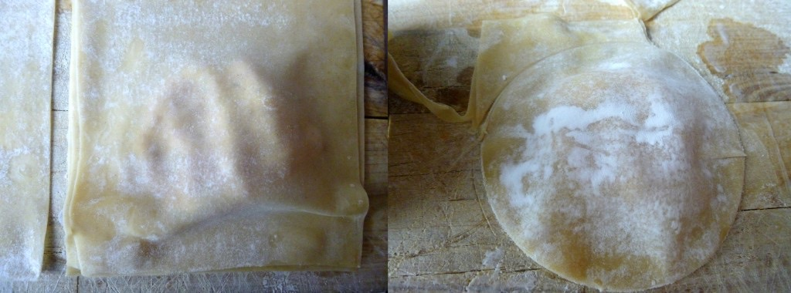
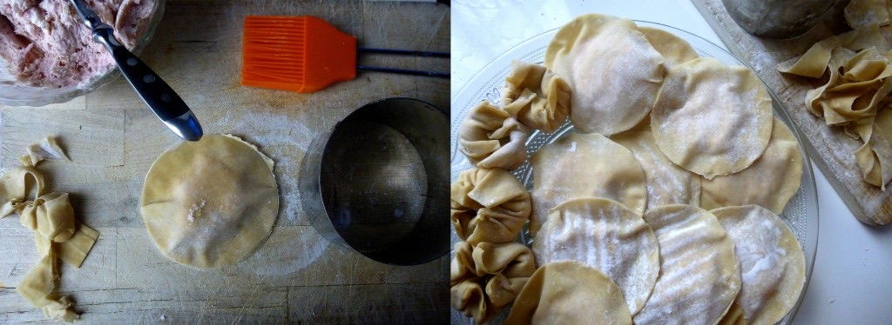
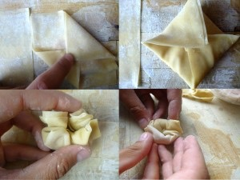
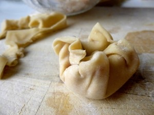
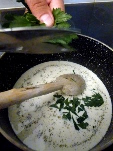
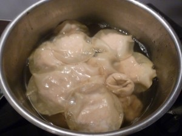
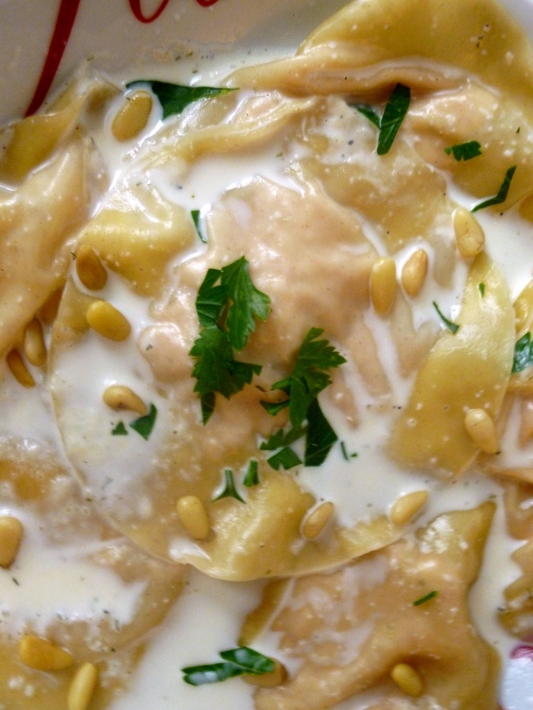
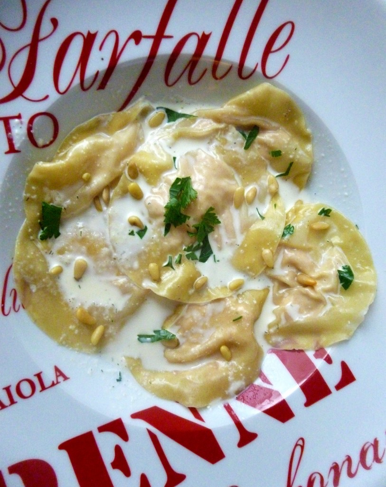

Ravioles Wonton jambon cream cheese

Bonjour tout le monde ! Aujourd’hui je vais vous parler d’une recette faite à partir de feuilles Wonton: les ravioles wonton.
Les feuilles Wonton sont utilisées dans la cuisine asiatique pour faire soit des raviolis chinois soit des Dim Sum cuites le plus généralement dans un délicieux bouillon, à la vapeurs ou en friture. Pour les ravioles, la pâte Wonton est généralement composée de farine de blé et d’œufs alors que pour les dim sum il s’agit de farine de riz .
Pour la petite anecdote : L’appellation « Won-Ton » fait partie de l’histoire chinoise. En effet, pendant la dynastie Han, les Huns attaquaient régulièrement les frontières du pays. Or, les deux chefs se prénommaient Hun et Tun. Les Chinois attribuèrent donc ces noms à des boulettes de viande. C’est au fil du temps, que les noms de « Huns » et de « Tuns” devinrent la fameuse pâte Won-Ton.
Je pense que la prochaine fois j’essaierai de faire moi même la pâte Wonton mais pour cette fois j’ai acheté des feuilles Wonton déjà prêtes dans une épicerie asiatique. J’ai décidé de faire des ravioles wonton avec une farce au jambon et du cream cheese mais vous pouvez y mettre pleins d’autres bonnes choses 🙂
Ingrédients
- Jambon blanc - 4 tranches
- Pâtes Wonton - 1 paquet
- cream cheese - 4 cas
- Pignons de pins - 1 poignée
- persil
- ail haché très finement
- crème liquide légere - 25cl
- pignons de pins - 1 pincée
- persil
- ail haché très finement
- sel, poivre noir
Instructions
- Dans le bol de votre mixeur, mélanger tous les ingrédients (jambon, cream cheese, pignons, ail, persil)
- Mixer pour obtenir une farce
- Poser une feuille Wonton sur votre plan de travail et la mouiller avec un pinceau
- Déposer un peu de farce au centre
- Recouvrir la farce avec une autre feuille Wonton et appuyer légèrement tout autour pour que les deux feuilles adhèrent bien l'une à l'autre
- A l'aide d'un emporte pièce (qui permettra de bien "sceller" la raviole) découper la raviole
- Continuer ainsi jusqu’à ne plus avoir de farce ou de feuilles!! (normalement il ne doit rester ni l'un ni l'autre car la quantité de farce correspond à un paquet de feuilles Wonton!)
- Il existe une multitudes de formes que l'on peut donner à ces ravioles (mon chéri préfère les rondes 🙂 ) un autre exemple que je vous propose :
- Faire chauffer la crème dans une poêle
- Ajouter l'ail haché
- Ciseler du persil et l'ajouter à la crème
- En fin de cuisson ajouter quelques pignons
- Faire bouillir de l'eau salée dans une grande marmite
- Mettre les ravioles dans l'eau bouillante
- Laisser cuire pas plus de 2 minutes









Les tips de la communauté
Ravioles originales très appréciées qui ressemblent plus faciles qu'elles ne le paraissent. Les feuilles wonton permettent une préparation rapide. Conseil précieux sur l'utilisation des chutes de pâte.
Astuces
- Ultra simple malgré l'apparence complexe - prendre le temps de bien plier
- Les feuilles wonton se trouvent facilement en magasins asiatiques
- Cuisson très rapide (environ 5 minutes)
- Les chutes de pâte peuvent servir pour garnir un bouillon ou être frites
- Le cream cheese c'est le St Moret ou Philadelphia (fromage à tartiner)
Variantes suggérées
- Plier en triangle avec une seule feuille pour moins de chutes
- Pâte faite maison à partir de farine et œufs si préférence
- Garnitures variées selon créativité